Current stage. The simulator, the data pipeline and the policy architecture are in place, and classical controllers for all eight behaviors run in the full simulator: seven succeed in at least 72% of episodes, and the trench controller in 44–53% (Table 1). A single-task policy completes truck loading in 72% of nominal and 59% of randomized episodes (Section 7). Next, these controllers generate the multi-task dataset, with DAgger rounds on every pretraining behavior. One policy is pretrained on it, fine-tuned to tasks it has not seen and compared with single-task training (Section 6), for which that policy is the baseline.
1. Goal
The aim is a policy that can dig, load, trench and grade across the soils, sites and machines found in practice, and that holds up on a real machine. Excavators execute a limited set of motions under widely varying conditions, and earthmoving differs from dexterous manipulation in ways that matter for learning: hydraulic actuation with lag and stall, soil properties observable only indirectly through cylinder pressure, and terrain that changes with each pass.
The route to that goal is the Large Behavior Model recipe: pretrain one policy across many behaviors, then fine-tune it to each new task. A central experiment measures what the recipe contributes: whether a pretrained policy learns a new task from fewer demonstrations, and generalizes better to unseen soils and sites, than a policy trained on that task alone.
Toyota Research Institute (TRI) reported this effect for dexterous manipulation. With approximately 1,700 hours of demonstrations spanning more than 500 tasks, policies fine-tuned from a pretrained model outperformed single-task training given the same task data, or matched it with 3–5× less data, and the difference increased under distribution shift[1]. Fine-tuning was essential: pretrained policies without fine-tuning did not consistently outperform single-task training.
ExT, from ETH Zurich, applied multi-task pretraining to excavation, using four tasks, state-vector inputs and demonstrations from a reinforcement learning policy, a trajectory planner and a human operator, and executed dig-dump-move cycles on a full-scale excavator[18]. This work builds on that direction. Its policy observes elevation maps first and adds cameras next. Its demonstrators are classical controllers with DAgger; human operators are a natural further source of demonstrations, although none are used here. It also adds a statistical protocol and a comparison of closed-loop methods. With eight behaviors rather than TRI's hundreds of tasks it works at a much smaller scale, and the experiment measures how large the effect is at that scale.
All results reported here were obtained in simulation.
2. Approach
The approach combines two published methodologies:
- Large Behavior Models[1]: pretrain one policy on many tasks, fine-tune it per task, and evaluate with sufficient rollouts and statistical rigor to establish differences.
- Open-loop pretraining followed by closed-loop post-training, as surveyed for autonomous driving by NVIDIA[14][42]: train on demonstrations, then continue training in simulation. In this project, that stage follows pretraining (milestone M3).
What has to work
- Pretraining has to pay off. Training on diverse earthmoving behaviors should reduce the data required for new tasks and improve robustness to new soils and sites, and subsequently to new machines. Section 6 sets out how this is measured.
- The policy has to exceed its demonstrators. DAgger cannot exceed the controller that labels it. Reinforcement learning anchored to the pretrained policy by a KL penalty[18], or in the diffusion noise space[15], is the route beyond it, and its cost to other tasks is measured alongside its gain.
- The sim-to-real gap has to be understood. A separate reality simulator, with different soil physics, hydraulic wear, sensor noise and latency, is excluded from training, so that the performance gap can be attributed by cause.
- Skills have to compose into work. An embodied reasoning model translates work orders into sequences of skills.
3. Behavior set
Eight excavator behaviors are defined. Seven are used for pretraining; trenching is held out, as is truck loading, so that fine-tuning on either measures what pretraining contributes to a new task (Section 6). Each has a closed-loop classical controller built on shared inverse kinematics, servo and digging-cycle components. The digging cycle follows the phases of a human operator[25][26] and reduces cut depth as cylinder pressures approach relief[24]. Tasks are conveyed to the policy by an instruction and the elevation map: terrain above the design surface denotes material to excavate, and a raised design surface denotes a dump area or travel destination.
| Behavior | Instruction | Nominal | Randomized |
|---|---|---|---|
| Dig | dig a full bucket from the stockpile | 94% (80–98%) | 88% (72–95%) |
| Swing | swing the loaded bucket over the truck | 100% (89–100%) | 88% (72–95%) |
| Dump to a truck | dump the load into the truck | 100% (89–100%) | 94% (80–98%) |
| Dump to a pile | move soil from the stockpile to the marked spoil area | 97% (84–99%) | 97% (84–99%) |
| Abort and recover | stop work and bring the bucket to the safe pose | 100% (89–100%) | 100% (89–100%) |
| Trench (held out) | dig the marked trench | 53% (36–69%) | 44% (28–61%) |
| Finish grading | grade the marked area to the design surface | 100% (89–100%) | 72% (55–84%) |
| Travel | drive to the marked pad | 100% (89–100%) | 94% (80–98%) |
| Full task: truck loading | load the truck from the stockpile | 94% (80–98%) | 84% (68–93%) |
Success is each behavior's own criterion, evaluated on simulator ground truth when the episode ends, on seeds 0–31 in both conditions. Both conditions vary the site and the initial state; the randomized condition also samples soil and machine parameters. With about ten randomized episodes per soil, no soil type stands out as a gap in coverage. Most trench failures are episodes that reach the time limit with soil remaining (11 of 32 nominal, 18 of 32 randomized). Only successful episodes enter the demonstration data.
What goes into pretraining
These are the controllers at work on randomized scenarios, each clip one recorded episode: the kind of demonstration the policy learns from. Lines on the ground show what the design surface marks in the policy's elevation map: a trench, an area to grade, a spoil area or a destination pad. The policy sees these as numbers in the map, not as painted lines. The trench clip shows a held-out task, whose demonstrations are reserved for fine-tuning.
Composition of the demonstration data
- Consistent demonstrator. One operator per behavior, whose decisions use only quantities observable to the policy: the elevation map, joint states, cylinder pressures and IMU.
- Randomized initial conditions and scenes. Stockpile geometry and position, truck pose and preload, initial machine configuration, target payload, soil and physical parameters. Soil ranges are informed by measured geotechnical variability[33].
- DART noise injection[12]. Noise is applied to the executed commands while the controller corrects, and the clean commands are retained as labels, so that the data include recovery behavior.
- Sensor noise on stored observations. The controller acts on noise-free observations.
- DAgger[11]. The policy acts on new seeds while the behavior's controller labels the visited states. Because the controller infers its phase from the state, it can label arbitrary states. The expert retains a decaying share of control: Ross et al. obtained their best Super Mario Bros. result with such a schedule and suggest that it reduces data from stalled states.
- Low-motion frames are retained in pretraining. TRI observed that removing them degraded pretrained models, although it improved single-task policies in simulation[1].
Held-out tasks
Truck loading to a target payload, trench excavation to specification, digging in clay, and operation at a held-out site. Truck loading and trenching are excluded from pretraining and its DAgger rounds: the policy learns their parts, such as digging, swinging, dumping and grading, but never sees the tasks themselves or their instructions. Subsequent work extends these tasks to the 12 t ZX120 and adds pad grading with the D37PXi dozer, both of which are already modeled in the simulator.
4. Policy architecture
The policy, groundwork_dit, extends the multi_task_dit implementation in LeRobot[36], which follows TRI's architecture: a diffusion transformer[6] trained with flow matching[5], conditioned on an instruction and observations, that predicts action chunks[3]. The extensions are an elevation-map encoder, a machine embedding, and per-machine action masks and state normalization, which allow one model to serve machines with different control interfaces.
Observations build up in stages: elevation maps first, of the kind LiDAR provides on a real machine, and then cameras. The policy receives the map in the cab's frame, turned with the boom, which proved to be the most effective single change in the map's representation (Section 8).
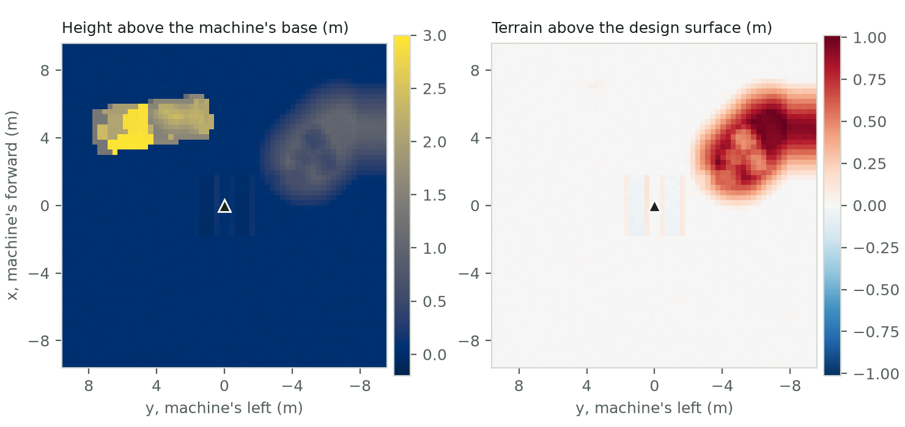
5. Simulation and data generation
Simulation uses Isaac Lab[34] with Newton physics[35] and runs hundreds of excavators in a single process. The machine is modeled as a free-base articulation on its tracks, so that tipping, sliding and rocking arise from the applied forces. Custom PyTorch models provide the hydraulics, soil mechanics[27][28][22][29], bucket contents and track-terrain interaction[30][31][32]. Machine models derive from PWRI's OPERA[38]. Demonstrations are recorded without rendering; images are generated afterward by state replay, so that rendering can be revised independently of the data.
| Quantity | Simulated | Reference |
|---|---|---|
| Swing speed | 13.35 rpm | 13.3 rpm, machine specification |
| Cylinder speeds | within 1.3% | Machine specification |
| Tipping loads | within 2–4% | Hitachi ZX200-5G lift chart |
| Soil cutting force | within 0.3% | Worked example in McKyes |
| Working ranges | within 1 cm | Hitachi published ranges |
| Recording throughput | 91 frames/s with 200 machines | One L4 GPU; 200 demonstrations in 36 min |
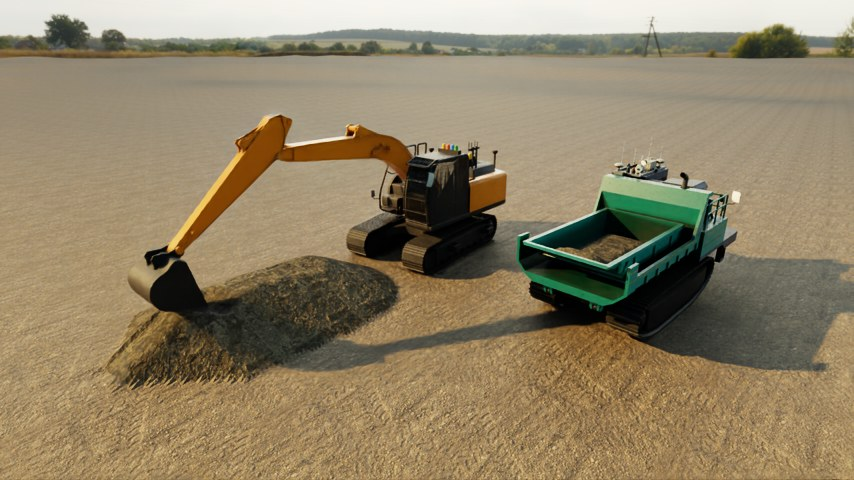
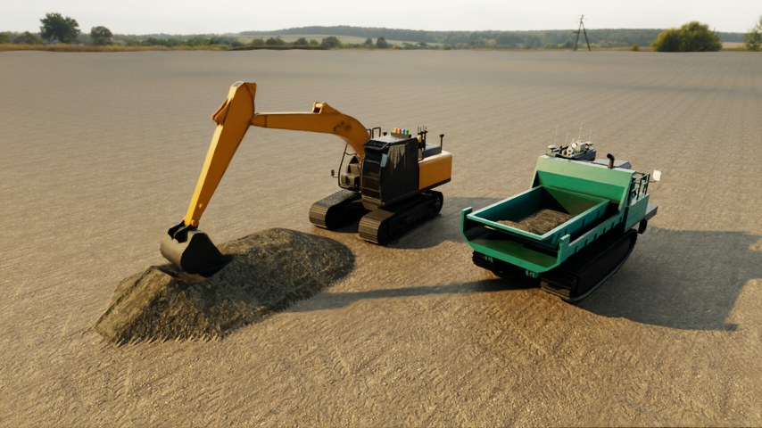
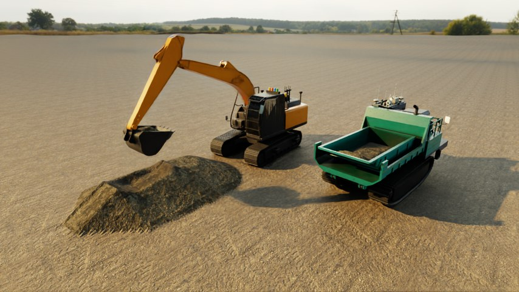
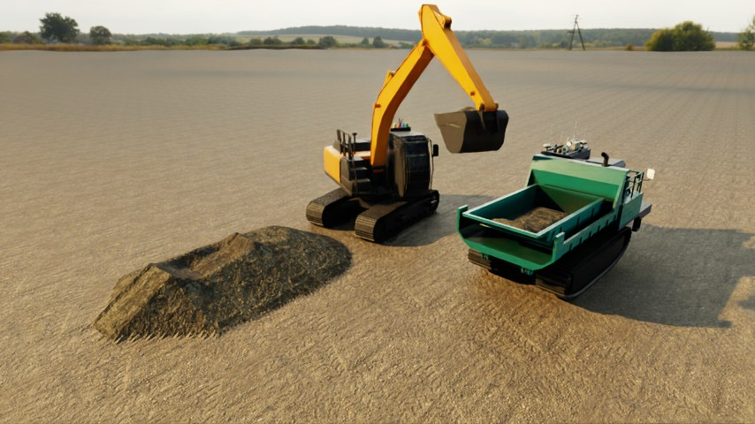
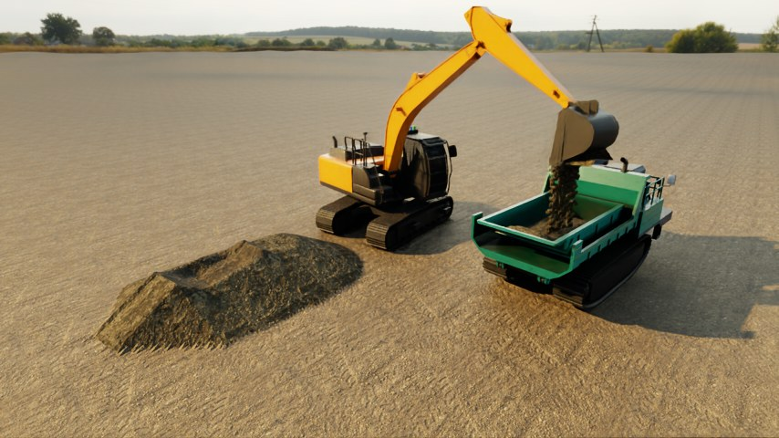
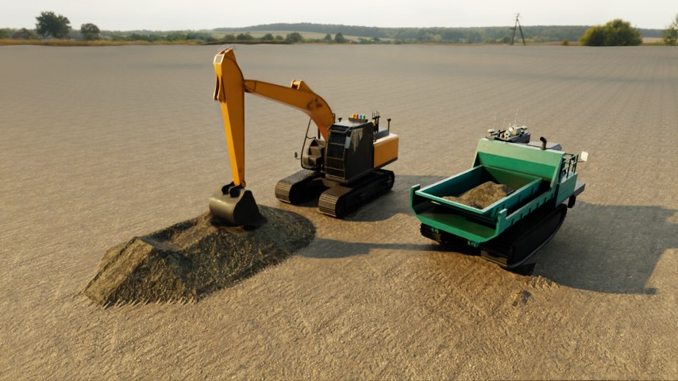
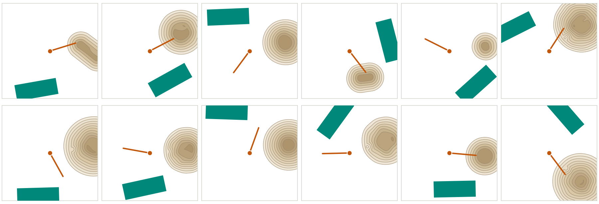
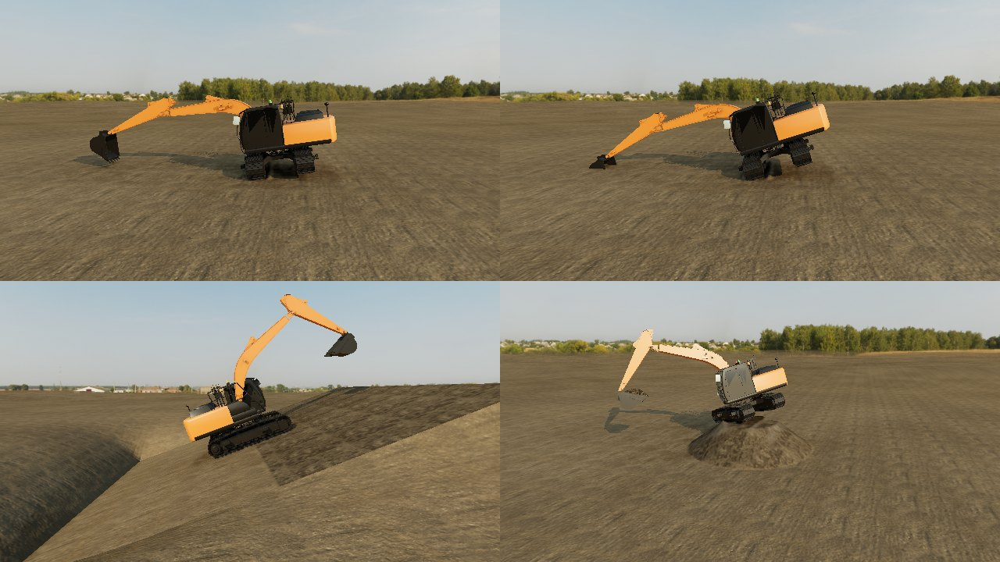
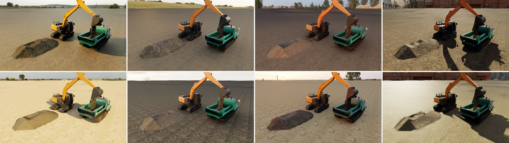
6. Experimental design
The experiment pretrains one policy on the seven pretraining behaviors, fine-tunes it on each held-out task with progressively less of that task's data, and compares it with the same model trained on the task alone. It establishes how much data pretraining saves and how much robustness it adds under changes of soil and site. TRI found that many effects were measurable only with larger-than-standard sample sizes and careful statistical testing[1]; the design therefore uses paired initial states and sequential tests.
| Element | Specification |
|---|---|
| Pretraining | One policy on the demonstrations and DAgger rounds of the seven pretraining behaviors |
| Fine-tuning | On each held-out task, with 2, 5, 10, 25, 50 and 100% of its data, each smaller share contained in the larger ones. A learning rate of 2e-5 and 10,000 steps, as TRI used for simulated tasks[1]; pretraining state statistics and action scale are retained |
| Baselines | The same model trained on that task alone from scratch, at each data fraction; the classical controller |
| Ablations | Pretraining data (25, 50, 100%); diversity (number of behaviors); elevation map alone against map with images |
| Conditions | Nominal, clay, a held-out site; subsequently the ZX120 |
| Metrics | Success rate, cycle time, payload per pass, grade error, spillage, intervention rate, valve reversals, and constraint violations (over-digging, truck contact, low tip-over margin) |
| Statistics | 200 rollouts per task, policy and condition from identical initial states. Beta posteriors; Lai's sequential test on paired outcomes with compact letter displays, following TRI[1]; McNemar's test; Welch's test for continuous metrics |
7. Single-task baseline: truck loading
The classical controller completes truck loading in 94% of nominal and 84% of randomized episodes on Isaac Lab. A sequence of policies cloned from it has been evaluated, using a smaller configuration than the full model: approximately 3M parameters, a learned instruction embedding and the elevation map as the only view of the site. The most recent completes the task in 72% of nominal and 59% of randomized episodes and serves as the single-task baseline against which pretrained policies are compared.
Nominal physicsRandomized physics
| Method | Success rate | Delivered (m³) | Payload per pass (m³) | Cycle time (s) | ||||
|---|---|---|---|---|---|---|---|---|
| Nom. | Rand. | Nom. | Rand. | Nom. | Rand. | Nom. | Rand. | |
| Classical controller | 94% | 84% | 2.77 | 2.95 | 0.47 | 0.43 | 14.3 | 15.0 |
| Policy: initial demonstrations, stick commands | 0% | 0% | 0.13 | 0.12 | 0.22 | 0.18 | 14.6 | 22.4 |
| Policy: consistent demonstrations, stick commands | 0% | 0% | 0.17 | 0.53 | 0.23 | 0.25 | 27.5 | 31.2 |
| Policy: consistent demonstrations, joint targets | 0% | 6% | 1.00 | 1.14 | 0.29 | 0.30 | 21.7 | 25.2 |
| Policy: keypoints, map fixed to the tracks | 16% | 16% | 2.18 | 1.76 | 0.33 | 0.27 | 16.8 | 18.5 |
| Policy: keypoints, map in the cab's frame | 50% | 50% | 2.40 | 2.44 | 0.39 | 0.37 | 16.2 | 17.3 |
| Policy: cab's frame, more demonstrations, DAgger | 72% | 59% | 2.78 | 2.74 | 0.37 | 0.40 | 16.7 | 16.5 |
The best policy matches the controller's median delivery in nominal conditions and comes close in randomized ones, but it is less reliable: 22 of 64 episodes fail, most by running out of time. Its cycles are slower, and median spillage is 0.8 m³ per episode, against 0.2–0.5 m³ for the controller. A second evaluation on the same seeds, recorded for analysis, succeeded in 78% of nominal and 69% of randomized episodes, which gives a sense of the spread between runs. In it, 95–96% of emptyings put soil in the truck, against 98–99% for the controller, and 72–73% of the soil lifted reached the truck, against 76–86%. At this sample size the difference in success from the controller on matching seeds falls short of significance (McNemar p = 0.065 nominal, 0.057 randomized); the pretraining experiment uses larger samples.
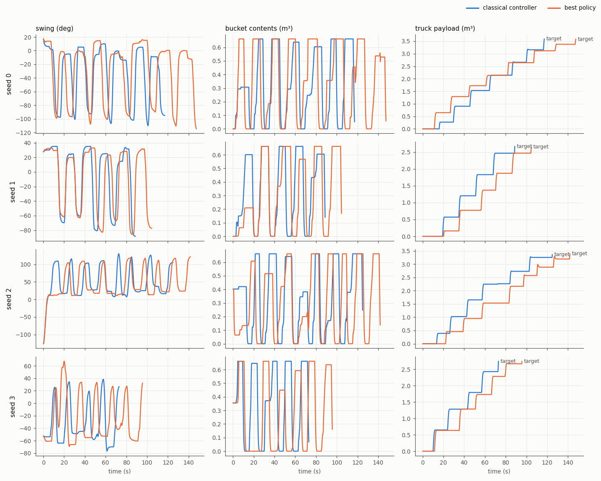
8. Findings
Measuring prediction quality
Several comparisons below use open-loop R², which scores a policy without running the simulator. On held-out demonstrations the policy predicts the actions it would execute next, and R² is the fraction of the variance in the demonstrator's actions that those predictions explain, averaged over the swing, boom, arm and bucket. A value of 1 means perfect prediction, and 0 means no better than always predicting the mean action. It measures how well the policy imitates in the states the demonstrator visited, not whether the policy succeeds when it drives, and it ranked encoders differently from closed-loop results (Table 6).
Action representation
Stick commands correspond to valve openings and therefore act as velocity commands. On held-out demonstrations they reached R² = 0.47, whereas chunks of joint targets, expressed relative to the pose observed at prediction time and tracked by the controller's servo, reached R² = 0.69. This is consistent with the finding in Diffusion Policy that position actions outperform velocity actions when predicting action sequences[2]. Median delivered soil increased from 0.2–0.5 m³ to 1.0–1.1 m³.
Demonstrator consistency
Removing the controller's hidden per-episode settings was expected to be the principal improvement. It left the R² of stick commands essentially unchanged (0.46 to 0.47), although the controller's own success rate improved. The effect of consistency on joint-target policies was not isolated and remains unknown. With the initial demonstrations, additional data yielded diminishing returns: R² of 0.25, 0.41 and 0.43 at 16, 32 and 69 demonstrations.
Model capacity
With 171 demonstrations, a 17M-parameter model reached R² = 0.70, against 0.69 for the 3M-parameter model, and overfit earlier. Model size is therefore not the current limitation.
Generalization of the elevation-map encoder
The elevation map is the policy's view of the site, and the map encoder is the network that reduces it to the vector conditioning the transformer. The original encoder applies four stride-2 convolutions, which reduce the 64 × 64 map, 19.2 m across, to a 4 × 4 grid of feature vectors, each covering 4.8 m. A linear layer then reads the flattened grid. This keeps track of where terrain lies relative to the machine, but it has a weakness: the linear layer holds separate weights for each cell of the grid. What it learns about a truck in one cell does not transfer to another, and nothing in its structure relates nearby truck positions to each other. Given few distinct truck poses, it can memorize them rather than compute a position from the features.
Consistent with this, a supervised test rules out the first explanation for the policy's dump misses, that a 4.8 m grid is too coarse to locate the truck. When regressing the vessel center from a single map, the grid encoder attains an error of 0.03 m on truck poses seen in training, far finer than its grid, and 1.06 m (6.8°) on held-out poses, comparable to the policy's closed-loop swing error at the truck. The limit is generalization, not resolution. Each demonstration contains a single truck pose, so 171 demonstrations provide 171 poses regardless of the number of frames.
Keypoints replace that structure. Each of K output channels becomes a probability distribution over the map, and its expected position gives one pair of continuous coordinates. When the truck moves somewhere new, the coordinates move with it, so position is computed rather than looked up. A global average of the final convolution's features then says what is on the map without saying where.
Map as recordedSite rotated at random about the swing axis
| Encoder | Held-out poses, as recorded | Held-out poses, rotated | Training poses, as recorded |
|---|---|---|---|
| Grid + linear layer | 1.06 m, 6.8° | 0.52 m, 3.3° | 0.03 m, 0.2° |
| Grid + keypoints | 1.05 m, 5.8° | 0.33 m, 2.2° | 0.03 m, 0.2° |
| Keypoints only | 0.64 m, 4.2° | 0.12 m, 0.8° | 0.04 m, 0.2° |
| Keypoints + global average | 0.69 m, 4.3° | 0.12 m, 0.8° | 0.03 m, 0.2° |
Rotation about the swing axis is a physical symmetry of the machine: the upper structure rotates on the undercarriage, so adding the same angle to the swing angle leaves joint targets relative to the observed pose unchanged. Scene diversity of this kind is one reason to expect pretraining to help, since an encoder shared across behaviors and sites observes many more scenes than the demonstrations of one task. The pretraining experiment tests this.
From localization to driving
The test above addresses truck localization only. On the full policy, driving in closed loop on the same demonstrations and seeds, its ranking did not hold (Table 6). Keypoints without rotation increased delivery over the grid. Rotation up to ±1 rad helped the grid but not keypoints. Keypoints with rotation up to ±180°, the best encoder for localization and the best by validation loss, was the worst in closed loop: 55 of 64 episodes ended stuck. In traces of it, a machine that starts far from the pile does not swing back and repeats digging motions in the air. A likely reason is that every pile lies within ±60° of the machine's forward direction, so a policy trained without rotation can steer by the swing angle alone, while rotation removes that cue and leaves a relation that the policy must infer from the map. Validation loss and R² are computed near the demonstrations and do not reveal this.
| Encoder | Success rate | Delivered (m³) | Spilled (m³) | Validation loss | Held-out R² |
|---|---|---|---|---|---|
| Grid, weights not averaged | 0% / 6% | 1.00 / 1.14 | 1.28 / 1.51 | 0.168 | 0.69 |
| Grid | 6% / 6% | 1.59 / 1.32 | 1.60 / 1.70 | 0.152 | 0.68 |
| Grid, rotation up to ±1 rad | 12% / 12% | 2.01 / 1.88 | 1.31 / 1.27 | 0.122 | 0.73 |
| Keypoints | 16% / 16% | 2.18 / 1.76 | 1.56 / 1.63 | 0.138 | 0.70 |
| Keypoints, rotation up to ±1 rad | 12% / 25% | 1.75 / 1.98 | 1.71 / 1.39 | 0.118 | 0.73 |
| Keypoints, rotation up to ±180° | 0% / 0% | 0.00 / 0.00 | 0.40 / 0.22 | 0.118 | 0.72 |
| Keypoints, cab frame | 50% / 50% | 2.40 / 2.44 | 1.05 / 0.78 | 0.119 | 0.74 |
Where the soil goes
Traces of the best policy with the map fixed to the tracks place the remaining gap at the dump. It held 0.61 m³ per pass, close to the controller's 0.65 m³, and neither lost a meaningful amount in transit, but 25% of its emptyings missed the truck, against 1% for the controller, and 52% of the soil it lifted reached the truck, against 86%. The misses fall beyond the ends of the vessel. The truck stands roughly across the arc of the swing, so these are errors in swing angle: the bucket opens too early or too late.
The map in the cab's frame
In the map as the simulator provides it, fixed to the tracks, the boom does not appear: its direction reaches the policy only as a swing angle among the state values. Whether the bucket is over the truck is then a relation between that number and the truck's position on the map, which must be learned across every position the truck can occupy. Turning the map by minus the swing angle before the encoder puts the boom along the map's forward axis, as a camera on the cab sees the site. A truck straight ahead of the boom then looks the same wherever it is parked (Figure 12), and as the boom swings the truck slides toward the center line, which directly shows how far is left to go. Unlike rotation augmentation, this builds the symmetry into the input and presents no artificial scenes. The swing angle stays in the state for whatever does depend on the tracks. The transform is one processing step, applied alike in training and when driving, and needs nothing recorded differently.
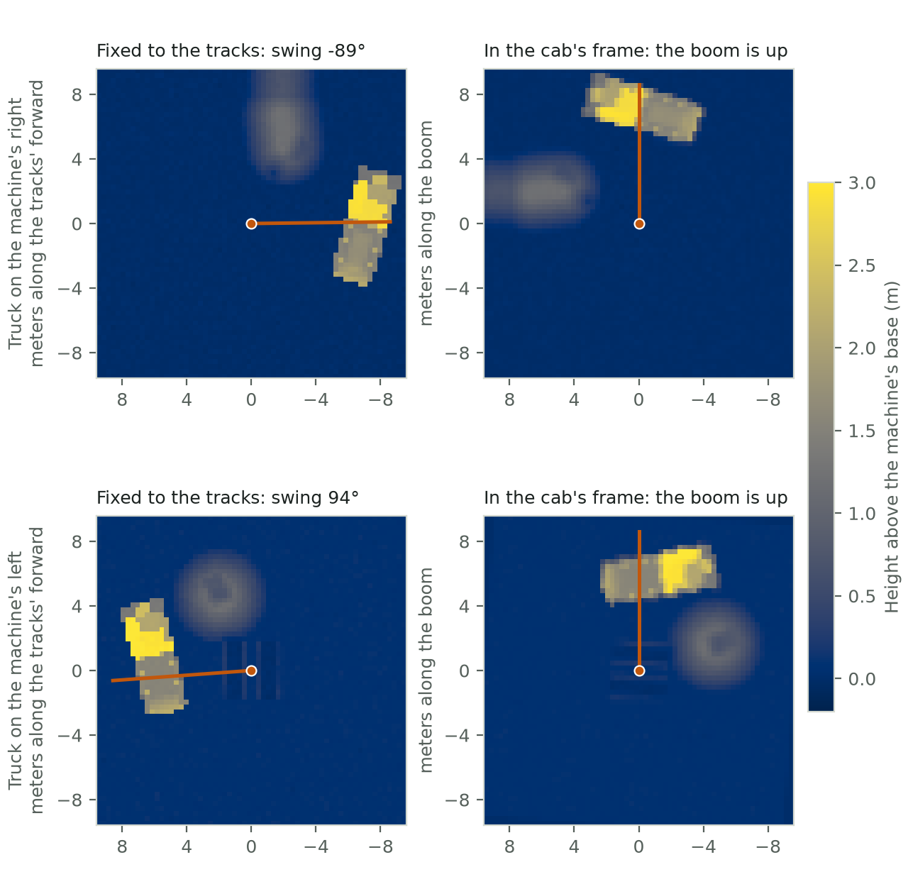
With the frame the only change, on the same demonstrations and seeds, success rose from 16% to 50% nominal and from 16% to 50% randomized. On matching seeds the cab frame alone succeeded 14 times and the tracks' frame alone 3 times in nominal conditions (McNemar p = 0.013), and 12 and 1 times in randomized conditions (p = 0.003). With 32 episodes per condition, each rate is uncertain by about 17 percentage points. Adding 359 further demonstrations and one DAgger round of 100 labeled episodes then brought success to 72% and 59% (Table 4), with median delivery close to the controller's and 95–96% of emptyings reaching the truck, against the 75% above. These two additions were made together, so their separate effects are not known.
9. Roadmap
- M1
Simulator and classical behaviors. The simulator; a closed-loop controller for each behavior: digging, swinging, dumping to a truck or a pile, trenching, finish grading, travel, recovery and truck loading; the data pipeline; and the single-task baseline with its evaluation.
- M2
Multi-task pretraining. Demonstrations and DAgger rounds on the pretraining behaviors, followed by pretraining, fine-tuning on held-out tasks and the comparison with single-task training.
Current stage - M3
Beyond behavior cloning. KL-anchored reinforcement learning and reinforcement learning in the diffusion noise space on the weakest fine-tuned task, with DAgger as the baseline.
- M4
Reality simulator and gap attribution. Particle soil, hydraulic wear, sensor noise, latency and photorealistic rendering, each enabled individually.
- M5
Reasoning and supervision. A reasoning model that translates work orders into skills, and monitors that trigger fallback behaviors.
- M6
Real-time deployment. Inference export, a C++ control loop, a watchdog and operating modes.
Limitations
- All results are from simulation. No experiments have been conducted on a physical machine.
- Soil is modeled as a heightfield with volume bookkeeping rather than as simulated material. In renders, soil can appear at the base of the bucket at first contact.
- Clay is held out, and the controller's clay dumps miss the truck. The crawler's yaw drifts under repeated swinging, by a median of 4–8° per minute in the longer behaviors and by up to 26° in a single 2.4-minute trench episode. This has not been compared with a physical machine.
- The elevation map is read from the simulator's surfaces with added sensor noise, not produced by a simulated LiDAR, so it has no occlusion and needs no filtering of the boom and bucket. A real map will have both problems.
- Results above use 32 episodes per condition, or recorded rollouts where stated. The pretraining experiment uses 200.
- The scale is far below that of TRI's study, whose effects were measured with approximately 1,700 hours of data and more than 500 tasks.
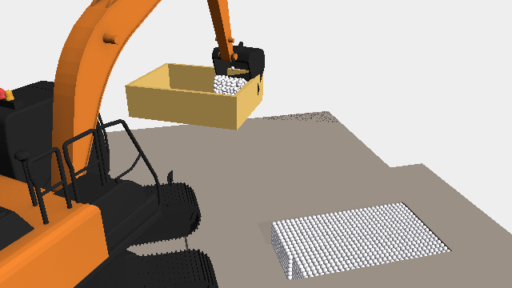
References
Large Behavior Models and multi-task policies
- A Careful Examination of Large Behavior Models for Multitask Dexterous Manipulation. TRI LBM Team (Barreiros et al.). Science Robotics 11(113), 2026; arXiv:2507.05331.Methodological basis. Fine-tuned LBMs outperform single-task training on the same data or match it with 3–5× less; performance increases with pretraining data; sequential tests on paired trials. Figures cited here are from the arXiv version.
- Diffusion Policy: Visuomotor Policy Learning via Action Diffusion. Chi et al. RSS 2023; IJRR 44(10-11), 2025.Reports that position-control actions consistently outperform velocity control, and that velocity control is more affected by latency. Its image encoder uses a spatial softmax.
- Learning Fine-Grained Bimanual Manipulation with Low-Cost Hardware. Zhao, Kumar, Levine, Finn. RSS 2023.Action chunking with transformers, addressing compounding errors.
- What Matters in Learning from Offline Human Demonstrations for Robot Manipulation. Mandlekar et al. CoRL 2021.Shows that results depend on algorithm design, demonstration quality and the stopping criterion.
- Flow Matching for Generative Modeling. Lipman et al. ICLR 2023.The training objective of the policy.
- Scalable Diffusion Models with Transformers. Peebles, Xie. ICCV 2023.The transformer denoiser on which the policy architecture is based.
- Learning Transferable Visual Models From Natural Language Supervision. Radford et al. ICML 2021.The image and text encoders of the policy.
- End-to-End Training of Deep Visuomotor Policies. Levine, Finn, Darrell, Abbeel. JMLR 17, 2016.The spatial softmax and expected-position layer used in the keypoint encoder.
- π0: A Vision-Language-Action Flow Model for General Robot Control. Black et al. RSS 2025.A flow-matching policy pretrained across robot platforms; related work.
- SmolVLA: A Vision-Language-Action Model for Affordable and Efficient Robotics. Shukor et al. arXiv:2506.01844, 2025.Candidate for an optional comparison of generic with domain-specific pretraining.
Imitation and closed-loop learning
- A Reduction of Imitation Learning and Structured Prediction to No-Regret Online Learning. Ross, Gordon, Bagnell. AISTATS 2011.DAgger: data are collected under the current policy and the next policy is trained on the aggregate. The expert mixture must decay; their best Super Mario Bros. result retained a decaying share, which they suggest reduces data from stalled states.
- DART: Noise Injection for Robust Imitation Learning. Laskey et al. CoRL 2017.Noise injection during demonstration, so that the supervisor demonstrates recovery.
- HG-DAgger: Interactive Imitation Learning with Human Experts. Kelly, Sidrane, Driggs-Campbell, Kochenderfer. ICRA 2019.Expert-gated takeover; the basis of the simulated supervisor.
- Beyond Behavior Cloning in Autonomous Driving: a Survey of Closed-Loop Training Techniques. Karkus et al. NVIDIA preprint, 2025.Covariate shift and compounding errors under open-loop training, and a taxonomy of closed-loop methods for driving.
- Steering Your Diffusion Policy with Latent Space Reinforcement Learning. Wagenmaker et al. CoRL 2025.Reinforcement learning over the input noise of a diffusion policy, without changing its weights; a candidate for M3.
- Proximal Policy Optimization Algorithms. Schulman et al. arXiv:1707.06347, 2017.The reinforcement learning method underlying KL-anchored post-training.
- DeepSeekMath: Pushing the Limits of Mathematical Reasoning in Open Language Models. Shao et al. arXiv:2402.03300, 2024.Introduces GRPO, a critic-free variant of PPO, for post-training and reasoning.
Earthwork
- ExT: Towards Scalable Autonomous Excavation via Large-Scale Multi-Task Pretraining and Fine-Tuning. Zhai, Terenzi, Frey, Garcia Soto, Egli, Hutter. arXiv:2509.14992, 2025.The closest related work: one transformer pretrained on four excavation tasks and fine-tuned by supervised learning or by PPO with a KL penalty toward the pretrained policy. Zero-shot transfer to a Menzi Muck M545; fine-tuning demonstrated in simulation. No public code release was found.
- From Target Selection to Digging: A Learning-Based Framework for Continuous Autonomous Excavation. Zhao et al. arXiv:2609.29750, 2026.Dig-target selection from LiDAR elevation maps, reinforcement learning for transport and imitation learning for digging, on a scaled excavator.
- Towards Learning Boulder Excavation with Hydraulic Excavators. Gruetter, Terenzi, Egli, Hutter. ICRA 2026.Reinforcement learning in Isaac Lab with an earth-moving force model, evaluated on a 12 t excavator.
- ExACT: An End-to-End Autonomous Excavator System Using Action Chunking With Transformers. Chen, Jin, Wang, Zhang. ICRA 2024 workshop.Action chunking from LiDAR, camera and joint positions to valve commands, evaluated in simulation.
- Reinforcement Learning-Based Bucket Filling for Autonomous Excavation. Egli, Terenzi, Hutter. IEEE T-FR 1, 2024.An analytical soil model based on the fundamental earth-moving equation, with randomized soil, sufficient for sim-to-real bucket filling.
- A General Approach for the Automation of Hydraulic Excavator Arms Using Reinforcement Learning. Egli, Hutter. IEEE RA-L 7(2), 2022.Reinforcement learning with a learned actuator model, deployed directly on a 12 t excavator.
- Planning and Control for Autonomous Excavation. Jud, Hottiger, Leemann, Hutter. IEEE RA-L 2(4), 2017.A dig defined by end-effector forces, adapting to the soil; the basis of the controller's pressure-dependent cut depth.
- Fundamental Analysis of Automatic Excavation. Hemami. J. Aerospace Engineering 8(4), 1995.Analysis of the excavation process and its control.
- The Development, Control and Operation of an Autonomous Robotic Excavator. Bradley, Seward. J. Intelligent and Robotic Systems 21(1), 1998.The LUCIE system: control derived from observation of machine operators, digging trenches on a tracked excavator.
- Paper 2: The Fundamental Equation of Earth-Moving Mechanics. Reece. Proc. IMechE 179(6), 1964.The force equation applied at the cutting edge of the bucket.
- Soil Cutting and Tillage. McKyes. Elsevier, 1985.Cutting-force models; the soil implementation is validated against its worked example.
- Theoretical Soil Mechanics. Terzaghi. Wiley, 1943.Bearing capacity, used for the resistance of the bucket floor.
- Theory of Ground Vehicles. Wong. Wiley; 5th edition, 2022.Pressure-sinkage and slip relations for tracks on soil.
- SCM: A Soil Contact Model for Multi-Body System Simulations. Krenn, Hirzinger. ISTVS 2009.Soil as an elevation grid with Bekker parameters; the form of the track-soil model.
- The analytical determination of drawbar pull as a function of slip for tracked vehicles in deformable soils. Janosi, Hanamoto. 1st Int. Conf. Mechanics of Soil-Vehicle Systems, 1961.The shear-displacement relation used for the tracks.
- Characterization of geotechnical variability. Phoon, Kulhawy. Canadian Geotechnical J. 36(4), 1999.Inherent variability of soil properties, informing the randomization ranges.
Software and assets
- Isaac Lab: A GPU-Accelerated Simulation Framework for Multi-Modal Robot Learning. Mittal et al. arXiv:2511.04831, 2025.The simulation framework (version 3.0, with Isaac Sim 6.2).
- Newton: GPU-accelerated physics simulation for robotics and simulation research. The Newton Contributors, 2025; built on Warp.The physics engine and a ray tracer used for the renders.
- LeRobot: An Open-Source Library for End-to-End Robot Learning. Cadene et al. ICLR 2026; arXiv:2602.22818.The dataset format and the multi_task_dit policy extended by groundwork_dit.
- RSL-RL: A Learning Library for Robotics Research. Schwarke et al. arXiv:2509.10771, 2025.PPO implementation for post-training.
- OPERA: Open Platform for Earthwork with Robotics and Autonomy. Public Works Research Institute, Japan.Models of the ZX200, ZX120 and IC120. PWRI states that their parameters are measured or estimated, without a guarantee of accuracy; the ZX200 masses were fitted to Hitachi's specification sheet.
- Project Chrono. Open-source multi-physics library.Its SCM terrain model is the reference for the track-soil model.
- Poly Haven. CC0 assets.Sky panoramas and soil materials.
- AlpaSim. NVIDIA, 2025.Design reference for the evaluation harness: metrics computed from logs and a separate evaluation world. Its vehicle-specific interfaces precluded direct use.
- AlpaGym. NVIDIA.The closed-loop reinforcement learning procedure for M3.
- Cosmos-Reason2. NVIDIA.The reasoning model for M5. Its repository now directs users to Cosmos 3.